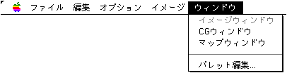
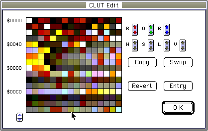

★Graphic Tools Guide
★MAP/SCREENエディタユーザーズマニュアル
★Graphic Tools Guide
★MAP/SCREENエディタユーザーズマニュアル
▲
戻る｜
進む▼
MAP/SCREENエディタユーザーズマニュアル
■ウィンドウメニュー

- ●イメージウィンドウ
- イメージウィンドウを表示、またはアクティブにします。
- ●CGウィンドウ
- キャラクタウィンドウを表示、またはアクティブにします。
- ●マップウィンドウ
- マップウィンドウを表示、またはアクティブにします。
- ●パレット編集...
- パレット編集ウィンドウを表示し、カラー・パレットデータの編集を行います。

- ◆R
- 選択範囲のカラーの赤強度を変更します。
- ◆G
- 選択範囲のカラーの緑強度を変更します。
- ◆B
- 選択範囲のカラーの青強度を変更します。
- ◆H
- 選択範囲のカラーの色相を変更します。
- ◆S
- 選択範囲のカラーの彩度を変更します。
- ◆L
- 選択範囲のカラーの明度を変更します。
- ◆V
- 選択範囲のカラーの強度を変更します。
- ◆Copy
- 選択範囲のカラーテーブルを指定パレットを起点とする位置へ上書きコピーします。
- ◆Swap
- 選択範囲のカラーテーブルを指定パレットを起点とする位置のカラーテーブルと交換します。
- ◆Entry
- 編集結果をキャラクタウィンドウ・マップウィンドウに反映します。
- ◆Revert
- 編集をやり直します。前回"Entry"された状態に復帰します。
▲
戻る｜
進む▼
★Graphic Tools Guide
★MAP/SCREENエディタユーザーズマニュアル
Copyright SEGA ENTERPRISES, LTD., 1997